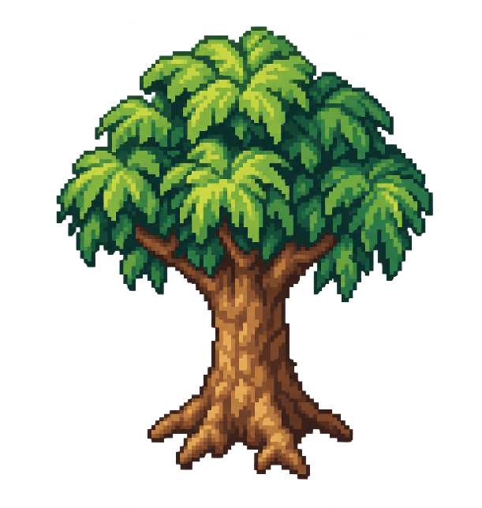

Sapo do Chapéu de Palha
Vila do Sol
Jornada
0:00 / 2:00
- Vila
- Campos
- Floresta
- Castelo
Pontos000
Recorde000
Fase1/4
Ritmo1.10x
Uma aventura além do brejo
Sapo do Chapéu de Palha
Modo história
Trilha do Chapéu de Palha
Explore a mata com as setas ou toque no mapa. A Rota da Manhã é a única fase disponível.


5 fases em construção · em breve

Cores salvas